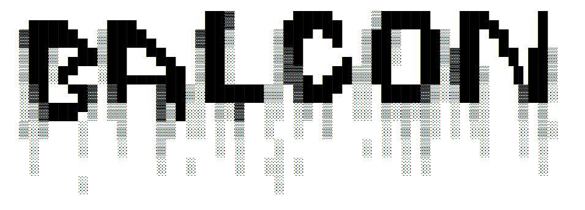

.BAT operating system
by bot4ol and lodo4nik

DOWNLOAD
instructions
DONATE
Update: alpha/0.5
● added time display
● added folder list
● added folder create func.
● added folder remove func.
● added file read func.
● added ASCII read func.
● added file remove func.
● added file rename func.
● added list of files in main folder
● added list of files in selected folder
● added clear screen (without logo)
● removed Herobrine
P.S. Main OS folder might be in the Desktop